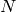
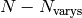
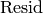
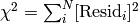
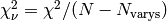
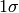

Performing Fits, Analyzing Outputs¶
As shown in the previous sections, a simple fit can be performed with the minimize() function. For more sophisticated modeling, the Minimizer class can be used to gain a bit more control, especially when using complicated constraints.
The minimize() function¶
The minimize function takes a function to minimize, a dictionary of Parameter , and several optional arguments. See Writing a Fitting Function for details on writing the function to minimize.
- minimize(function, params, args=None, kws=None, method='leastsq', **leastsq_kws)¶
find values for the params so that the sum-of-squares of the returned array from function is minimized.
Parameters: - function (callable.) -- function to return fit residual. See Writing a Fitting Function for details.
- params (dict) -- a dictionary of Parameters. Keywords must be strings that match [a-z_][a-z0-9_]* and is not a python reserved word. Each value must be Parameter.
- args (tuple) -- arguments tuple to pass to the residual function as positional arguments.
- kws (dict) -- dictionary to pass to the residual function as keyword arguments.
- method (string) -- name of fitting method to use. See Choosing Different Fitting Methods for details
- leastsq_kws (dict) -- dictionary to pass to scipy.optimize.leastsq
Returns: Minimizer object, which can be used to inspect goodness-of-fit statistics, or to re-run fit.
For backward compatibility, the keyword engine is retained as a synonym for method, but this should be considered depracated.
On output, the params will be updated with best-fit values and, where appropriate, estimated uncertainties and correlations. See Goodness-of-Fit and estimated uncertainty and correlations for further details.
Writing a Fitting Function¶
An important component of a fit is writing a function to be minimized in the least-squares sense. Since this function will be called by other routines, there are fairly stringent requirements for its call signature and return value. In principle, your function can be any python callable, but it must look like this:
- func(params, *args, **kws):
calculate objective residual to be minimized from parameters.
Parameters: - params (dict) -- parameters.
- args -- positional arguments. Must match args argument to minimize()
- kws -- keyword arguments. Must match kws argument to minimize()
Returns: residual array (generally data-model) to be minimized in the least-squares sense.
Return type: numpy array. The length of this array cannot change between calls.
A common use for the positional and keyword arguments would be to pass in other data needed to calculate the residual, including such things as the data array, dependent variable, uncertainties in the data, and other data structures for the model calculation.
The objective function should return the value to be minimized. For the Levenberg-Marquardt algorithm from leastsq(), this returned value must be an array, with a length greater than or equal to the number of fitting variables in the model. For the other methods, the return value can either be a scalar or an array. If an array is returned, the sum of squares of the array will be sent to the underlying fitting method, effectively doing a least-squares optimization of the return values.
Since the function will be passed in a dictionary of Parameters, it is advisable to unpack these to get numerical values at the top of the function. A simple example would look like:
def residual(pars, x, data=None):
# unpack parameters:
# extract .value attribute for each parameter
amp = pars['amp'].value
period = pars['period'].value
shift = pars['shift'].value
decay = pars['decay'].value
if abs(shift) > pi/2:
shift = shift - sign(shift)*pi
if abs(period) < 1.e-10:
period = sign(period)*1.e-10
model = amp * sin(shift + x/period) * exp(-x*x*decay*decay)
if data is None:
return model
return (model - data)
In this example, x is a positional (required) argument, while the data array is actually optional (so that the function returns the model calculation if the data is neglected). Also note that the model calculation will divide x by the varied value of the 'period' Parameter. It might be wise to make sure this parameter cannot be 0. It would be possible to use the bounds on the Parameter to do this:
params['period'] = Parameter(value=2, min=1.e-10)
but might be wiser to put this directly in the function with:
if abs(period) < 1.e-10:
period = sign(period)*1.e-10
Choosing Different Fitting Methods¶
By default, the Levenberg-Marquardt algorithm is used for fitting. While often criticized, including the fact it finds a local minima, this approach has some distinct advantages. These include being fast, and well-behaved for most curve-fitting needs, and making it easy to estimate uncertainties for and correlations between pairs of fit variables, as discussed in Goodness-of-Fit and estimated uncertainty and correlations.
Alternative algorithms can also be used. These include simulated annealing which promises a better ability to avoid local minima, and BFGS, which is a modification of the quasi-Newton method.
To select which of these algorithms to use, use the method keyword to the minimize() function or use the corresponding method name from the Minimizer class as listed in the Table of Supported Fitting Methods.
Table of Supported Fitting Methods:
Fitting Method method arg to minimize() Minimizer method method arg to scalar_minimize() Levenberg-Marquardt leastsq leastsq() Not available Nelder-Mead nelder fmin() Nelder-Mead L-BFGS-B lbfgsb lbfgsb() L-BFGS-B Simulated Annealing anneal anneal() Anneal Powell powell Powell Conjugate Gradient cg CG Newtown-CG newton Newton-CG COBYLA cobyla COBYLA Sequential Linear Squares Programming slsqp SLSQP
Note
Use of scipy.optimize.minimize() requires scipy 0.11 or higher.
Note
The objective function for the Levenberg-Marquardt method must return an array, with more elements than variables. All other methods can return either a scalar value or an array.
Warning
The Levenberg-Marquardt method is by far the most tested fit method, and much of this documentation assumes that this is the method used. For example, many of the fit statistics and estimates for uncertainties in parameters discussed in Goodness-of-Fit and estimated uncertainty and correlations are done only for the leastsq method.
In particular, the simulated annealing method appears to not work correctly.... understanding this is on the ToDo list.
Goodness-of-Fit and estimated uncertainty and correlations¶
On a successful fit using the leastsq method, several goodness-of-fit statistics and values related to the uncertainty in the fitted variables will be calculated. These are all encapsulated in the Minimizer object for the fit, as returned by minimize(). The values related to the entire fit are stored in attributes of the Minimizer object, as shown in Table of Fit Results while those related to each fitted variables are stored as attributes of the corresponding Parameter.
Table of Fit Results: These values, including the standard Goodness-of-Fit statistics, are all attributes of the Minimizer object returned by minimize().
| Minimizer Attribute | Description / Formula |
|---|---|
| nfev | number of function evaluations |
| success | boolean (True/False) for whether fit succeeded. |
| errorbars | boolean (True/False) for whether uncertainties were estimated. |
| message | message about fit success. |
| ier | integer error value from scipy.optimize.leastsq |
| lmdif_message | message from scipy.optimize.leastsq |
| nvarys | number of variables in fit  |
| ndata | number of data points:  |
| nfree ` | degrees of freedom in fit:  |
| residual | residual array (return of func():  |
| chisqr | chi-square:  |
| redchi | reduced chi-square:  |
Note that the calculation of chi-square and reduced chi-square assume that the returned residual function is scaled properly to the uncertainties in the data. For these statistics to be meaningful, the person writing the function to be minimized must scale them properly.
After a fit using using the leastsq() method has completed succsessfully, standard errors for the fitted variables and correlations between pairs of fitted variables are automatically calculated from the covariance matrix. The standard error (estimated  error-bar) go into the stderr attribute of the Parameter. The correlations with all other variables will be put into the correl attribute of the Parameter -- a dictionary with keys for all other Parameters and values of the corresponding correlation.
In some cases, it may not be possible to estimate the errors and correlations. For example, if a variable actually has no practical effect on the fit, it will likely cause the covariance matrix to be singular, making standard errors impossible to estimate. Placing bounds on varied Parameters makes it more likely that errors cannot be estimated, as being near the maximum or minimum value makes the covariance matrix singular. In these cases, the errorbars attribute of the fit result (Minimizer object) will be False.
Using the Minimizer class¶
For full control of the fitting process, you'll want to create a Minimizer object, or at least use the one returned from the minimize() function.
- class Minimizer(function, params, fcn_args=None, fcn_kws=None, iter_cb=None, scale_covar=True, **kws)¶
creates a Minimizer, for fine-grain access to fitting methods and attributes.
Parameters: - function (callable.) -- objective function to return fit residual. See Writing a Fitting Function for details.
- params (dict) -- a dictionary of Parameters. Keywords must be strings that match [a-z_][a-z0-9_]* and is not a python reserved word. Each value must be Parameter.
- fcn_args (tuple) -- arguments tuple to pass to the residual function as positional arguments.
- fcn_kws (dict) -- dictionary to pass to the residual function as keyword arguments.
- iter_cb (callable or None) -- function to be called at each fit iteration
- scale_covar -- flag for scaling covariance matrix and uncertainties to reduced chi-square (leastsq only)
- kws (dict) -- dictionary to pass as keywords to the underlying scipy.optimize method.
Returns: Minimizer object, which can be used to inspect goodness-of-fit statistics, or to re-run fit.
The Minimizer object has a few public methods:
- leastsq(scale_covar=True, **kws)¶
perform fit with Levenberg-Marquardt algorithm. Keywords will be passed directly to scipy.optimize.leastsq. By default, numerical derivatives are used, and the following arguments are set:
leastsq() arg Default Value Description xtol 1.e-7 Relative error in the approximate solution ftol 1.e-7 Relative error in the desired sum of squares maxfev 2000*(nvar+1) maximum number of function calls (nvar= # of variables) Dfun None function to call for Jacobian calculation
- anneal(**kws)¶
perform fit with Simulated Annealing. Keywords will be passed directly to scipy.optimize.anneal.
anneal() arg Default Value Description schedule cauchy annealing schedule maxiter 2000*(nvar+1) maximum number of iterations For me, this Simulated Annealing appears to never work.
- lbfgsb(**kws)¶
perform fit with L-BFGS-B algorithm. Keywords will be passed directly to scipy.optimize.fmin_l_bfgs_b.
lbfgsb() arg Default Value Description factr 1000.0 approx_grad True calculate approximations of gradient maxfun 2000*(nvar+1) maximum number of function calls (nvar= # of variables)
- fmin(**kws)¶
perform fit with Nelder-Mead downhill simplex algorithm. Keywords will be passed directly to scipy.optimize.fmin.
fmin() arg Default Value Description ftol 1.e-4 function tolerance xtol 1.e-4 parameter tolerance maxfun 5000*(nvar+1) maximum number of function calls (nvar= # of variables)
- scalar_minimize(method='Nelder-Mead', hess=None, tol=None, **kws)¶
perform fit with any of the scalar minimimization algorithms supported by scipy.optimize.minimize.
scalar_minimize() arg Default Value Description method Nelder-Mead fitting method tol 1.e-7 fitting and parameter tolerance hess None Hessian of objective function
- prepare_fit(**kws)¶
prepares and initializes model and Parameters for subsequent fitting. This routine prepares the conversion of Parameters into fit variables, organizes parameter bounds, and parses, checks and "compiles" constrain expressions.
This is called directly by the fitting methods, and it is generally not necessary to call this function explicitly. An exception is when you would like to call your function to minimize prior to running one of the minimization routines, for example, to calculate the initial residual function. In that case, you might want to do something like:
myfit = Minimizer(my_residual, params, fcn_args=(x,), fcn_kws={'data':data}) myfit.prepare_fit() init = my_residual(p_fit, x) pylab.plot(x, init, 'b--') myfit.leastsq()
That is, this method should be called prior to your fitting function being called.